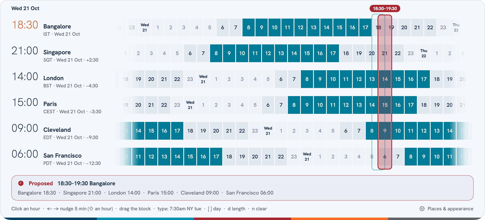
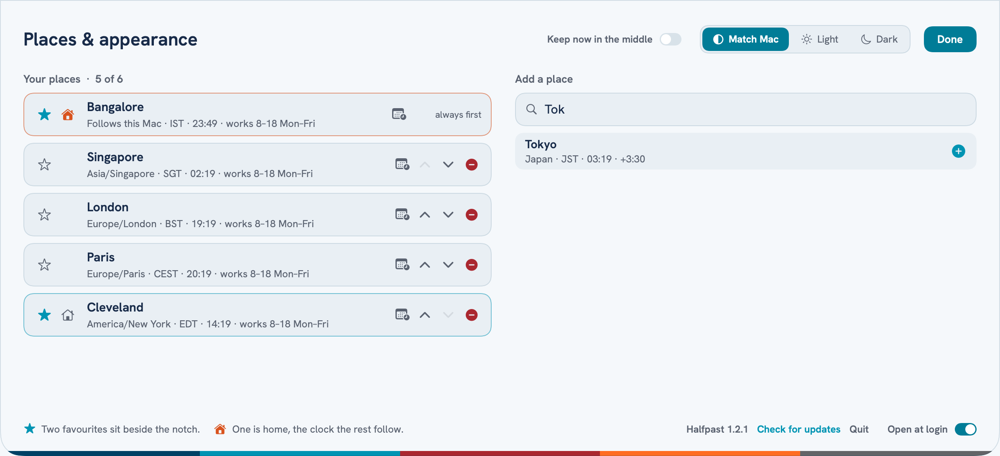
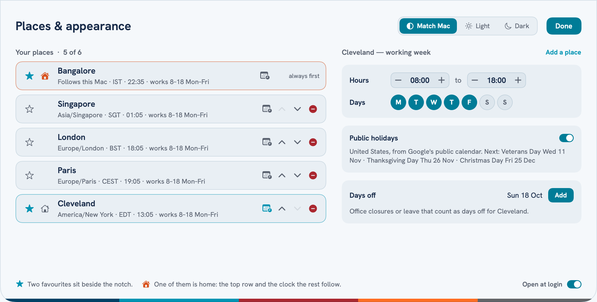

The time elsewhere, tucked into your notch.
Most world clocks were drawn for places that keep time on the hour. Halfpast was built in Bangalore, where the clock has always run thirty minutes off everyone else's — so it gets the awkward offsets right, and finds the hour that is fairest to all of them.
Download for MacClick the notch, or press ⌃⌥T anywhere. Each place is a 24-hour strip, lined up on the same moment: working hours in teal, the hours people are awake in a softer shade, the night left dark. Midnight shows the new day's date, so you can see who is already in tomorrow.

Halfpast outlines the hour that is least unkind to whoever is worst off — the one where nobody is dialling in at three in the morning if it can be helped.
Not everyone is in every meeting. Hide a place and it folds to a thin line, out of the fairest hour and out of the email, until you bring it back.
Clocks change on different dates in different countries. Halfpast reads the Mac's own time zone data, so every offset is right on every day — no internet needed.
Click an hour and a meeting appears across every place. Nudge it five minutes at a time, drag it, or set it to 15, 30, 45 minutes or an hour. Or just type it — 7:30am NY tue, 6:15 India, 14.30 CET friday — and the ribbon moves to that day.
Then Copy for email, and paste:
Up to six places — any city, country or time zone, found as you type. Star two to sit beside the notch, and make one of them home: the top row, and the clock the rest are measured from. Light, dark, or whatever your Mac is set to.

Every place keeps its own working day. Set the hours and the working days for each — the Gulf works Sunday to Thursday, and Halfpast knows it. Public holidays come in for every country, and you can add days off of your own: an office closure, a client on leave. The grid shows them, the fairest hour steers round them, and a time you propose on someone's holiday is flagged before you send it.

Diwali in Bangalore, Thanksgiving in Cleveland, Eid in Dubai — each place's public holidays show on its own strip, so nobody is asked to give one up.
Land in London and Halfpast asks whether to plan from there. Say yes and London becomes the clock everything is measured from; home stays on the ribbon. Come home and it quietly goes back.
Halfpast checks once a day for a new version and offers it when there is one. Nothing to remember, nothing to download again.
Everything works from the keyboard once the ribbon is open.
| ⌃⌥T | Open or close Halfpast from anywhere |
| 0–9 | Start typing a time: 6:15 india, 7:30am NY tomorrow |
| ← → | Nudge the proposed time five minutes (with ⇧, an hour) |
| [ ] | Previous or next day |
| d | Meeting length: 15, 30, 45 or 60 minutes |
| f | Propose the fairest hour |
| n | Clear, and back to now |
| t | 24-hour, AM/PM, or 24-hour with a UTC row |
| p / c | Copy the ribbon as a picture, or the times as text |
| s | Places & appearance |
Made for Macs with a notch. On a Mac without one, the same spot at the top centre of the screen does the job.
Private by design: no account, no tracking. Halfpast asks Google's public holiday calendars for your places' countries (only the country is sent), checks this site once a day for updates, and looks up a place with Apple Maps only when you ask. Nothing else leaves your Mac.
To remove it, quit Halfpast (right-click the notch) and drag it to the Bin.